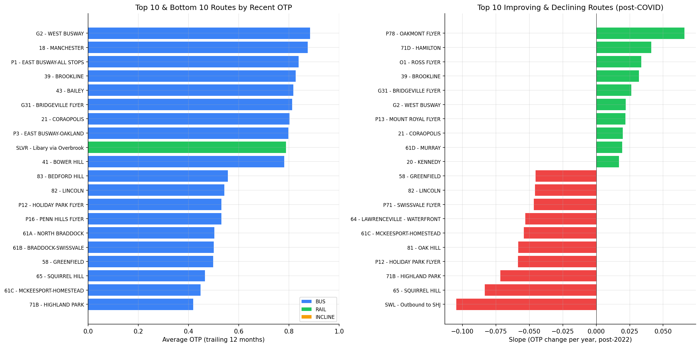

Analysis
03 - Route Ranking
Core OTP Patterns
Coverage: 2019-01 to 2025-11 (from otp_monthly).
Built 2026-04-03 19:51 UTC · Commit ebbab23
Page Navigation
Analysis Navigation
Data Provenance
flowchart LR
03_route_ranking(["03 - Route Ranking"])
t_otp_monthly[("otp_monthly")] --> 03_route_ranking
01_data_ingestion[["Data Ingestion"]] --> t_otp_monthly
u1_01_data_ingestion[/"data/routes_by_month.csv"/] --> 01_data_ingestion
u2_01_data_ingestion[/"data/PRT_Current_Routes_Full_System_de0e48fcbed24ebc8b0d933e47b56682.csv"/] --> 01_data_ingestion
u3_01_data_ingestion[/"data/Transit_stops_(current)_by_route_e040ee029227468ebf9d217402a82fa9.csv"/] --> 01_data_ingestion
u4_01_data_ingestion[/"data/PRT_Stop_Reference_Lookup_Table.csv"/] --> 01_data_ingestion
u5_01_data_ingestion[/"data/average-ridership/12bb84ed-397e-435c-8d1b-8ce543108698.csv"/] --> 01_data_ingestion
t_route_stops[("route_stops")] --> 03_route_ranking
01_data_ingestion[["Data Ingestion"]] --> t_route_stops
t_routes[("routes")] --> 03_route_ranking
01_data_ingestion[["Data Ingestion"]] --> t_routes
d1_03_route_ranking(("matplotlib (lib)")) --> 03_route_ranking
d2_03_route_ranking(("numpy (lib)")) --> 03_route_ranking
d3_03_route_ranking(("polars (lib)")) --> 03_route_ranking
d4_03_route_ranking(("scipy (lib)")) --> 03_route_ranking
classDef page fill:#dbeafe,stroke:#1d4ed8,color:#1e3a8a,stroke-width:2px;
classDef table fill:#ecfeff,stroke:#0e7490,color:#164e63;
classDef dep fill:#fff7ed,stroke:#c2410c,color:#7c2d12,stroke-dasharray: 4 2;
classDef file fill:#eef2ff,stroke:#6366f1,color:#3730a3;
classDef api fill:#f0fdf4,stroke:#16a34a,color:#14532d;
classDef pipeline fill:#f5f3ff,stroke:#7c3aed,color:#4c1d95;
class 03_route_ranking page;
class t_otp_monthly,t_route_stops,t_routes table;
class d1_03_route_ranking,d2_03_route_ranking,d3_03_route_ranking,d4_03_route_ranking dep;
class u1_01_data_ingestion,u2_01_data_ingestion,u3_01_data_ingestion,u4_01_data_ingestion,u5_01_data_ingestion file;
class 01_data_ingestion pipeline;
Findings
Findings: Route Ranking
Summary
94 routes had sufficient data (12+ months) to rank. Rankings use trailing 12-month average OTP to reflect current performance, and post-2022 slope to capture recent trajectory without COVID distortion. Slopes now include 95% confidence intervals via scipy.stats.linregress; 51 of 94 slopes are statistically significant (CI excludes zero). 3 routes were flagged as high-volatility. Routes are ranked both overall and within their mode (BUS, RAIL, UNKNOWN).
Regression to the Mean
Caution: Extreme-ranked routes -- both top/bottom performers and most-improving/declining -- are expected to regress toward the mean in subsequent periods. This is a statistical phenomenon, not an operational one: routes that happen to have unusually good or bad stretches will tend to look less extreme next time, even without any intervention. Rankings should be interpreted as snapshots, not predictions. A route appearing at the top or bottom of a list does not necessarily mean it will stay there. Formal empirical Bayes shrinkage could partially correct for this, but is beyond the scope of this analysis. Readers should weight these rankings accordingly, especially for routes with fewer observations or higher volatility.
Top 5 Routes (by trailing 12-month OTP)
| Route | Mode | Mode Rank | Recent OTP | All-Time OTP | Stops |
|---|---|---|---|---|---|
| G2 - West Busway | BUS | 1/89 | 88.4% | 81.7% | 24 |
| 18 - Manchester | BUS | 2/89 | 87.5% | 88.4% | 43 |
| P1 - East Busway-All Stops | BUS | 3/89 | 83.9% | 84.5% | 24 |
| 39 - Brookline | BUS | 4/89 | 82.6% | 78.9% | 69 |
| 43 - Bailey | BUS | 5/89 | 81.8% | 79.5% | 65 |
All top 5 are BUS routes. The 3 RAIL routes rank 9th (SLVR, 78.8%), 12th (BLUE, 77.4%), and 30th (RED, 72.8%) overall.
Bottom 5 Routes (by trailing 12-month OTP)
| Route | Mode | Mode Rank | Recent OTP | All-Time OTP | Stops |
|---|---|---|---|---|---|
| 71B - Highland Park | BUS | 89/89 | 41.9% | 58.8% | 107 |
| 61C - McKeesport-Homestead | BUS | 88/89 | 44.8% | 56.8% | 158 |
| 65 - Squirrel Hill | BUS | 87/89 | 46.5% | 61.5% | 70 |
| 58 - Greenfield | BUS | 86/89 | 49.8% | 60.8% | 102 |
| 61B - Braddock-Swissvale | BUS | 85/89 | 50.1% | 58.4% | 137 |
Post-COVID Trends (2022 onward)
Slopes are computed via OLS with standard errors. Only statistically significant slopes (95% CI excludes zero) are listed below. 43 of 94 routes have slopes that are not statistically significant -- their trend cannot be distinguished from flat.
Most improving (statistically significant):
| Route | Slope (pp/yr) | 95% CI | Months |
|---|---|---|---|
| P78 - Oakmont Flyer | +6.6 | [+5.0, +8.2] | 47 |
| 71D - Hamilton | +4.1 | [+2.5, +5.7] | 47 |
| O1 - Ross Flyer | +3.4 | [+2.1, +4.6] | 47 |
| 39 - Brookline | +3.2 | [+0.9, +5.5] | 45 |
| G31 - Bridgeville Flyer | +2.6 | [+1.6, +3.6] | 47 |
Most declining (statistically significant):
| Route | Slope (pp/yr) | 95% CI | Months |
|---|---|---|---|
| 65 - Squirrel Hill | -8.3 | [-11.7, -4.9] | 46 |
| 71B - Highland Park | -7.2 | [-8.8, -5.5] | 47 |
| P12 - Holiday Park Flyer | -5.8 | [-7.4, -4.2] | 47 |
| 81 - Oak Hill | -5.8 | [-7.3, -4.3] | 47 |
| 61C - McKeesport-Homestead | -5.4 | [-6.6, -4.2] | 47 |
Notable non-significant slopes: SWL (Outbound to SHJ) has a point estimate of -10.4 pp/yr but its 95% CI is [-34.7, +13.8] due to having only 13 observations over a 21-month span -- the apparent steep decline cannot be statistically distinguished from zero.
Observation Span
Most routes with slopes have the full 47-month post-2022 span. Two routes have notably narrow observation windows:
- SWL (Outbound to SHJ): 13 observations over 21 months
- P2 (East Busway Short): 21 observations over 21 months (significant slope, but over less than half the full window)
Routes with narrow spans may have slopes that are less representative of sustained trends.
Observations
- Using trailing 12-month OTP shifts the rankings compared to all-time averages: G2 (West Busway) has improved markedly and now leads, while 71B (Highland Park) and 65 (Squirrel Hill) have deteriorated significantly.
- The post-COVID slope isolates recent trajectory without the structural break caused by the 2020 COVID ridership drop, which dominated full-period slopes.
- High-volatility routes (std > 2x median) include SWL, 15 (Charles), and 65 (Squirrel Hill), which have extreme month-to-month swings.
- 4 routes were excluded from ranking for having fewer than 12 months of data.
- 89 of the 94 ranked routes are BUS, 3 are RAIL, and 2 are UNKNOWN mode. Within-mode ranks are provided in the CSV to allow fair comparisons.
Missing Stop Count Data
5 routes lack stop count data because they have no entries in the route_stops table: SWL (Outbound to SHJ), 37 (Castle Shannon), 42 (Potomac), P2 (East Busway Short), and RLSH (Red Line Shuttle). Stop counts for these routes are reported as null.
Caveats
- Stop counts come from current data; historical stop counts may have differed.
- Post-COVID slope assumes a roughly linear trajectory from 2022 onward, which may not hold for all routes.
- Regression to the mean (see dedicated section above) means that top/bottom rankings and most-improving/declining lists overstate the persistence of extreme performance. These lists identify current outliers, not necessarily future ones.
- Routes with narrow observation spans (SWL, P2) have less reliable slope estimates even when statistically significant.
Review History
- 2026-02-11: RED-TEAM-REPORTS/2026-02-11-analyses-01-05-07-11.md — 7 issues (1 significant). Added RTM caveat, slope standard errors and 95% CIs, observation span tracking, within-mode rankings, zero-variance guard, updated METHODS.md for post-2022 period, and documented null stop counts.
Output

best/worst performers chart.
No interactive outputs declared.
per-route summary stats, slopes with SEs/CIs, overall and within-mode rankings.
Preview CSV
Methods
Methods: Route Ranking
Question
Which routes are the best and worst performers? Which are improving or declining? Which are most volatile?
Approach
- Compute per-route summary stats: mean OTP, standard deviation, min, max.
- Compute trailing 12-month average OTP as "recent performance" metric.
- Fit a simple linear slope (OTP vs. time) per route for the post-2022 period only (
POST_COVID_START = "2022-01") to quantify recent trend direction without COVID distortion. Slopes are computed viascipy.stats.linregress, which provides standard errors. - For each slope, compute a 95% confidence interval and flag whether it is statistically significant (CI excludes zero).
- A zero-variance guard prevents division-by-zero when all observations fall in the same month.
- Compute actual observation span (first-to-last month range) alongside observation count to identify routes with narrow windows.
- Rank routes three ways: by recent average OTP, by trend slope, and by volatility (std dev). Rankings are computed both overall and within mode (BUS, RAIL, etc.).
- Flag routes with high volatility that may warrant anomaly investigation.
Data
| Name | Description | Source |
|---|---|---|
otp_monthly |
Monthly OTP per route | prt.db table |
routes |
Route metadata (name, mode) | prt.db table |
route_stops |
Stop count as a complexity proxy (5 routes lack entries in this table) | prt.db table |
Output
output/route_ranking.csv-- per-route summary stats, slopes with SEs/CIs, overall and within-mode rankingsoutput/top_bottom_routes.png-- best/worst performers chart
Source Code
|
Sources
| Name | Type | Why It Matters | Owner | Freshness | Caveat |
|---|---|---|---|---|---|
| otp_monthly | table | Primary analytical table used in this page's computations. | Produced by Data Ingestion. | Updated when the producing pipeline step is rerun. | Coverage depends on upstream source availability and ETL assumptions. |
Upstream sources (5)
|
|||||
| route_stops | table | Primary analytical table used in this page's computations. | Produced by Data Ingestion. | Updated when the producing pipeline step is rerun. | Coverage depends on upstream source availability and ETL assumptions. |
Upstream sources (5)
|
|||||
| routes | table | Primary analytical table used in this page's computations. | Produced by Data Ingestion. | Updated when the producing pipeline step is rerun. | Coverage depends on upstream source availability and ETL assumptions. |
Upstream sources (5)
|
|||||
| matplotlib | dependency | Runtime dependency required for this page's pipeline or analysis code. | Open-source Python ecosystem maintainers. | Version pinned by project environment until dependency updates are applied. | Library updates may change behavior or defaults. |
| numpy | dependency | Runtime dependency required for this page's pipeline or analysis code. | Open-source Python ecosystem maintainers. | Version pinned by project environment until dependency updates are applied. | Library updates may change behavior or defaults. |
| polars | dependency | Runtime dependency required for this page's pipeline or analysis code. | Open-source Python ecosystem maintainers. | Version pinned by project environment until dependency updates are applied. | Library updates may change behavior or defaults. |
| scipy | dependency | Runtime dependency required for this page's pipeline or analysis code. | Open-source Python ecosystem maintainers. | Version pinned by project environment until dependency updates are applied. | Library updates may change behavior or defaults. |